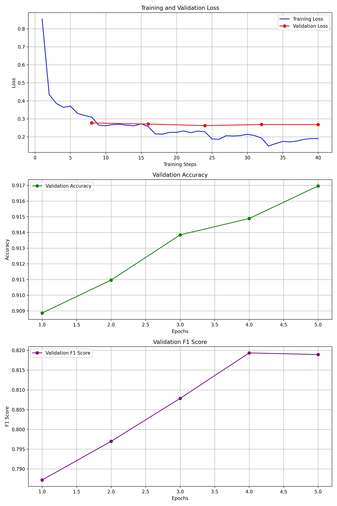
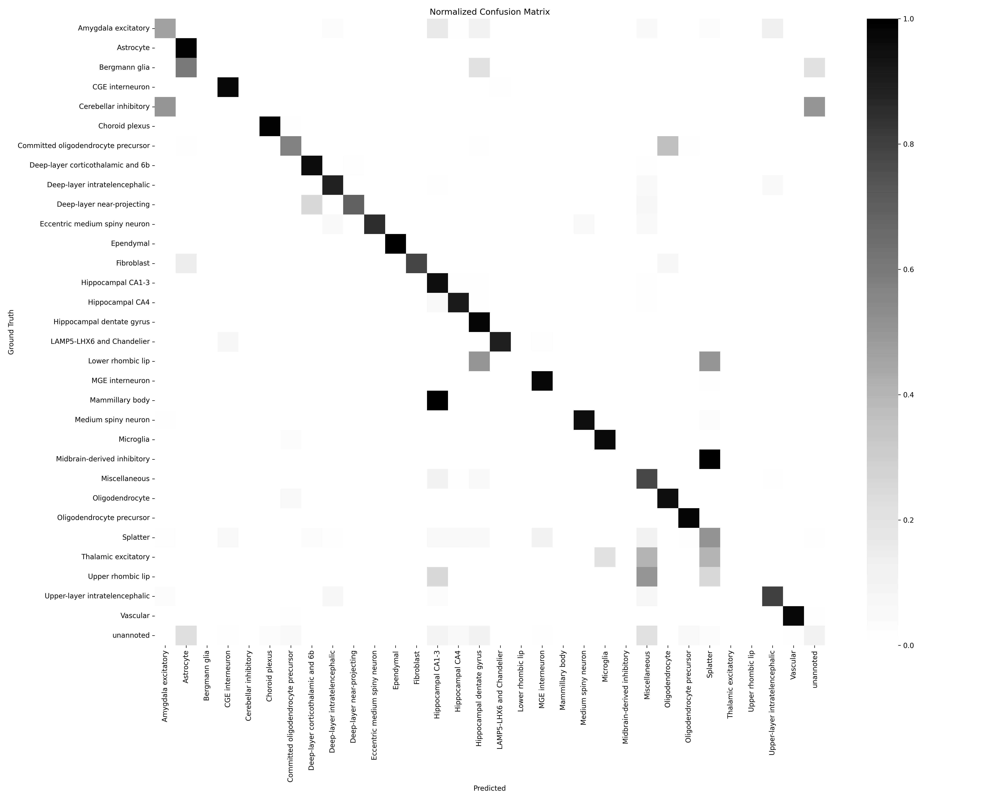

A Deep Learning approach using PyTorch and scRNA-seq data to map the human hippocampus.
Explore the ProjectThis project leverages single-cell RNA sequencing (scRNA-seq) data from the human hippocampus (YiZhou 2022 dataset) to build a robust deep learning classifier.
The goal is to accurately identify diverse neuronal and glial cell types based on their gene expression profiles. Utilizing the scanpy library for robust bioinformatics processing and PyTorch for building a custom neural network, we achieved high classification accuracy on major cell types.
Raw scRNA-seq data is inherently noisy. We used scanpy to perform rigorous quality control and normalization steps to ensure reliable model training.
To reduce dimensionality and focus on biologically relevant signals, we selected highly variable genes (HVGs).
Key Code Snippet:
# Normalize and Log Transform
sc.pp.normalize_total(adata, target_sum=1e4)
sc.pp.log1p(adata)
# Select top 2048 highly variable genes
sc.pp.highly_variable_genes(adata, n_top_genes=2048)
adata_hvg = adata[:, adata.var.highly_variable]Based on notebook cells[cite: 54, 55, 56].
An initial exploratory analysis revealed significant class imbalance in the dataset. Major cell types like Dentate Gyrus granule cells and Astrocytes dominate, while extremely rare types have very few samples.
[cite_start]This imbalance presents a challenge for machine learning models, which we addressed using stratified data splitting[cite: 64].
Figure 1: Distribution of cell types in the processed dataset[cite: 59, 101].
We utilized Principal Component Analysis (PCA) followed by Uniform Manifold Approximation and Projection (UMAP) to visualize the high-dimensional gene expression data in 2D space[cite: 101].
The resulting plot shows clear separation between distinct cell populations, suggesting that the gene expression features contain sufficient information for classification.
Figure 2: UMAP visualization illustrating distinct cell type clusters[cite: 62, 100].
We designed a custom Multi-Layer Perceptron (MLP) using PyTorch to map the 2,048 input gene features to cell type probabilities.
The model consists of an input layer followed by five densely connected hidden layers with decreasing dimensionality before the final output classification layer[cite: 65, 66].
The model showed rapid convergence. Both validation accuracy and F1-score plateaued around epoch 4-5, indicating effective learning without significant overfitting.
 [cite_start]Figure 3: Training metrics showing Loss, Accuracy, and F1-score evolution over 5 epochs[cite: 73].
Overall accuracy on unseen test data[cite: 75].
Accounts for class imbalance[cite: 93].
Visualizing performance across all classes on the test set. The diagonal represents correct predictions.
Figure 4: Normalized Confusion Matrix. Rows represent true labels, columns represent predicted labels. Darker blues indicate a higher proportion of correct classifications for that true class.
Detailed classification report available in the project notebook output [cite: 75-93].